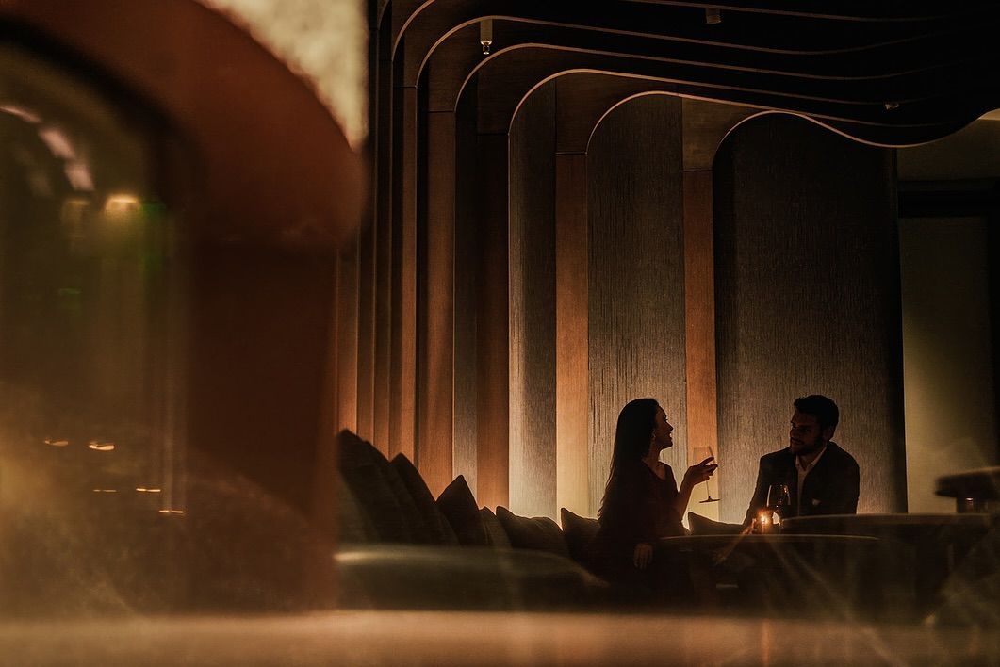

CAFE & LOUNGE
조용히 기대어
쉬어가는 자리
그라포드의 휴식은 커다란 암석에 몸을 기댔을 때처럼, 조용하지만
단단하게 사람의 체중을 받쳐주는 감각에 가깝습니다.
잠시 멈춰 서서 생각을 정리하고, 일상으로 돌아갈 에너지를
채우는 든든한 기반이 되어 제자리를 지키며 조용히 사람을 맞이할
뿐입니다.
소란한 일상 속에서 언제든 돌아와 마음을 내려놓고, 자신만의 속도를 차분히 회복할 수 있는 단단한 자리가 되기를 바랍니다.